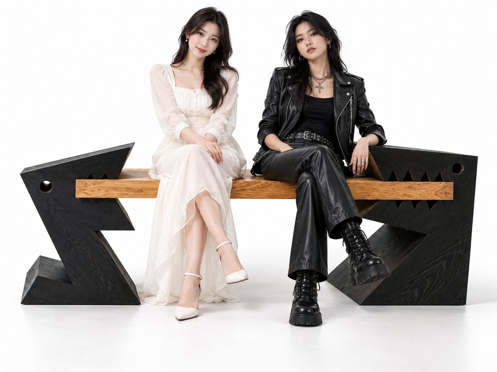
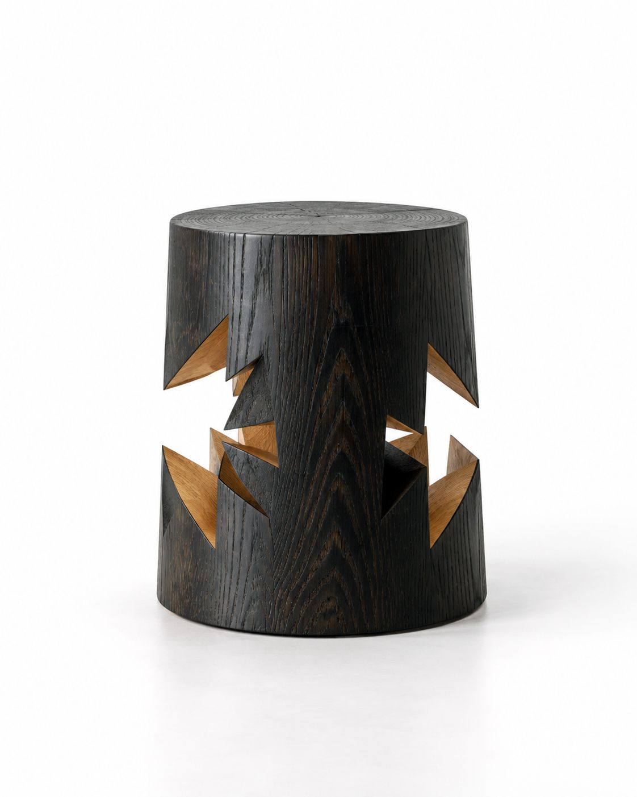
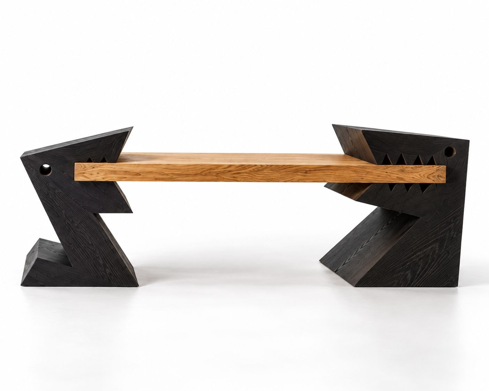
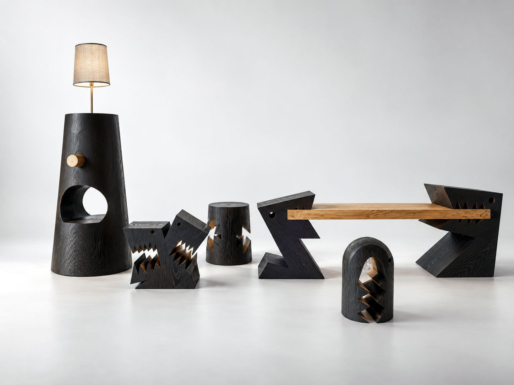
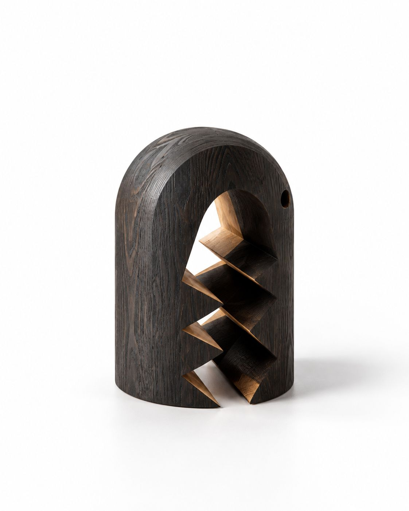
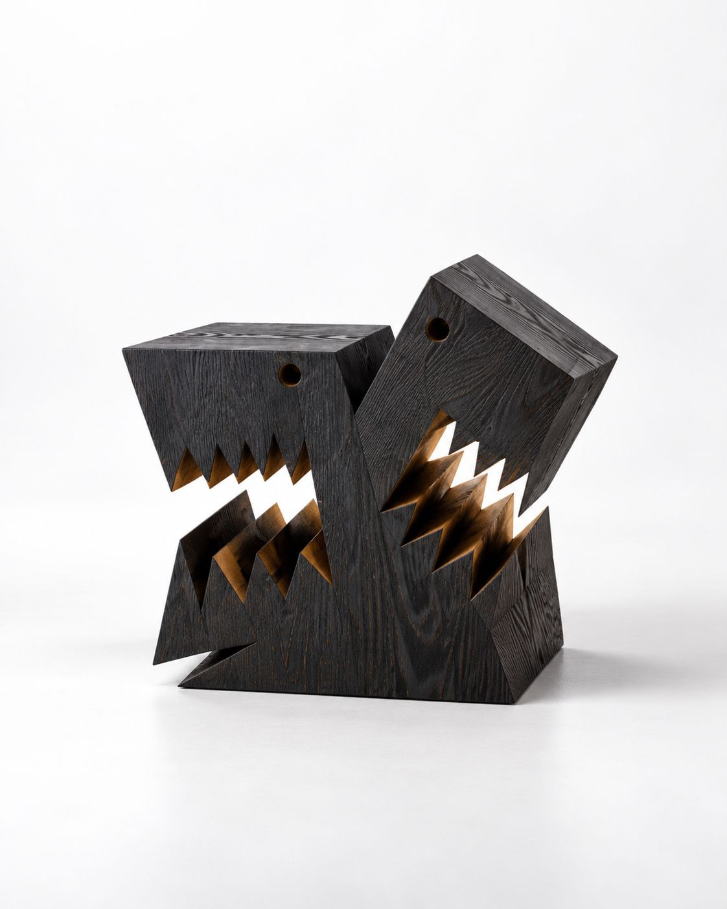
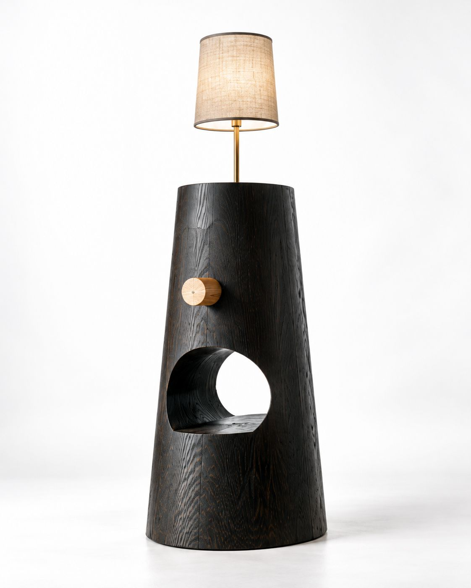

WORK 04 / 29
Inner Beast
Instinct and restraint held within a single object.
Year2022
StageConcept

DESIGN STORY
Inner Beast examines the opposing impulses within a person: instinct and restraint, aggression and calm, temptation and conscience. Angular cuts, dark surfaces and teeth-like details suggest a primal side, while measured proportions and functional forms provide a counterbalance. Each piece holds these tensions together rather than resolving them, reflecting the constant negotiation between impulse and control.





